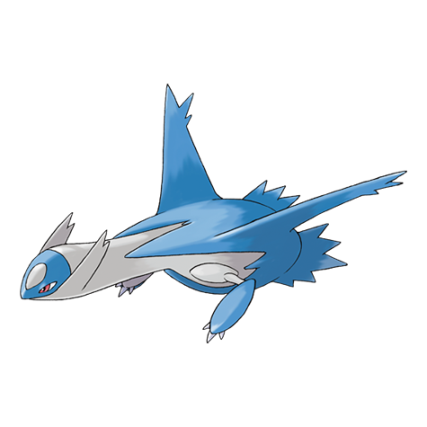
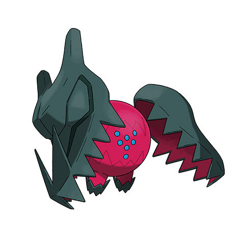
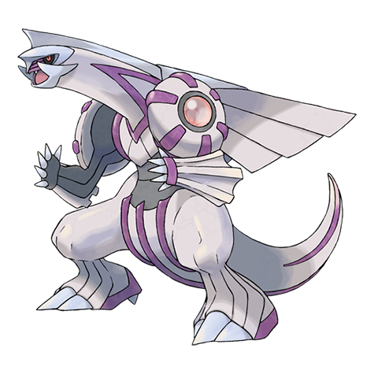
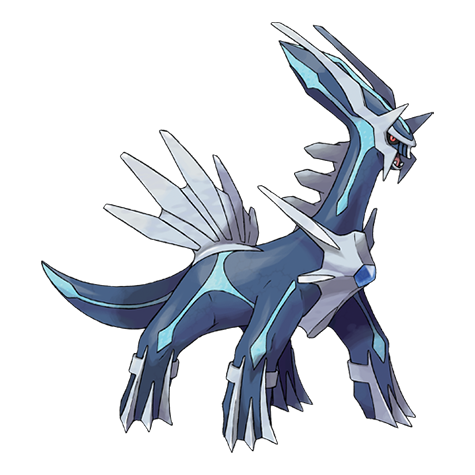
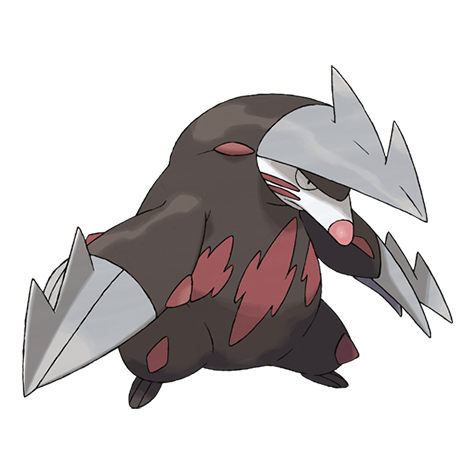

- キョダイマックス エースバーン（ほのお）。マックスバトルの★5以上ボス（キョダイマックス）。
- 弱点：みず・じめん・いわ
- 耐性：ほのお・くさ・こおり・むし・はがね・フェアリー
- 攻撃役はシャワーズ（ダイストリーム Lv2・みず弱点）。みずはエースバーンのほのおも軽減できる。ザマゼンタ・メタグロスはほのお弱点なので今回は使わない
スペシャルアタック候補
- このボスがスペシャルアタックとして使う技の候補（みんポケ＋第2源で照合）。この中からランダムで出る。タイプ一致（STAB）の技はダメージが1.2倍で特に警戒。
- 【ほのお】（タイプ一致・1.2倍） かえんほうしゃ／かえんボール／ブラストバーン／ニトロチャージ
- 【かくとう】 きあいだま
- 技は選べない。最初の大技のタイプを見て、そのタイプに強い手持ちに替える（下の実効防御比較表を参照）
ボスの強さ（PokéChespin t6-gmax・実験値）
PokéChespin（pokechespin.net）の t6-gmax モデル（★6キョダイマックス）。強さは HP と t6-gmax 係数（単一値）で決まる。この係数は実験値で、みんポケ式の単体／全体／防御の3分値とは違い、低攻撃種族の補正込みの単一係数（攻撃倍率は t6-gmax では×1＝t5ダイマックスの×2とは異なる）。避けられない全体攻撃の実効は 0.8、スワイプで避けられる単体攻撃はその2倍（1.6）。みんポケ(9db)はこのボスのCPMを公表していないため、t5ダイマックスのような外部データでの検算はできない（下の数値は PokéChespin の実験モデルによる目安）。
| 項目 | 値 |
|---|---|
| HP | 80,000 |
| t6-gmax 係数（単一値・実験値） | 0.8 |
| 攻撃倍率 | ×1 |
| 全体攻撃の実効（避けられない） | 0.8×1 ＝ 0.8 |
| 単体攻撃（スワイプで回避可） | 全体の2倍 ＝ 1.6 |
HPは PokéChespin t6-gmax の 80,000。
出典: PokéChespin（pokechespin.net・GitHub CreatorBeastGD/pokechespin）の t6-gmax モデル（みんポケ=9db はCPM未公表）（PokéChespin t6-gmax：lib/PoGoAPI.ts t6gmaxStats（HP）＋ lib/calculations.ts CPM_VALUES（コード→係数）・攻撃倍率は lib getDamageMultiplier('raid-t6-gmax')=1）／CPM・HPともに実験値のため目安
被ダメージ率（全体攻撃1発）
ボスの全体攻撃（避けられない技）1発で、各ポケモンが最大HPの何％を削られるか（実ダメージ÷最大HP）。100%超＝1発で倒れる（赤セル）。PokéChespin t6-gmax モデル（★6キョダイマックス・係数は実験値 0.8×攻撃倍率×1＝実効 0.8）で計算。手持ちのダイマックス／キョダイマックス全個体を、いちばん耐える順（下の注記参照）で並べている。
| 受け役 | かえんほうしゃ 威65 | ブラストバーン 威120 | ニトロチャージ 威70 | きあいだま 威140 |
|---|---|---|---|---|
 ハピナス ハピナスHP399 | 14.0% | 25.6% | 15.0% | 39.8% |
 ザマゼンタ(王) ザマゼンタ(王)盾+60 HP228 | 22.4% | 40.8% | 24.1% | 39.9% |
 ラティアス ラティアスHP121 | 27.3% | 49.6% | 28.9% | 47.9% |
 ラティオスHP119 | 31.1% | 58.0% | 33.6% | 56.3% |
 ムゲンダイナ ムゲンダイナHP145 | 32.4% | 60.0% | 35.2% | 57.9% |
 カイリキー カイリキーHP174 | 33.3% | 60.9% | 35.6% | 59.8% |
| ハピナス(2体目) HP305 | 23.9% | 43.9% | 25.6% | 68.2% |
 エースバーン エースバーンHP149 | 26.2% | 47.7% | 28.2% | 74.5% |
 ユクシー ユクシーHP115 | 40.9% | 75.7% | 44.3% | 46.1% |
 ザシアン ザシアンHP158 | 41.8% | 76.6% | 44.9% | 46.8% |
 シャワーズ シャワーズHP169 | 28.4% | 52.1% | 30.8% | 81.1% |
 ドサイドン ドサイドンHP188 | 18.1% | 33.5% | 19.7% | 83.0% |
 メタグロス メタグロスHP154 | 45.5% | 83.8% | 48.7% | 50.6% |
 レジドラゴHP246 | 30.1% | 54.9% | 32.1% | 85.4% |
 パルキアHP119 | 19.3% | 36.1% | 21.0% | 88.2% |
 サーナイト サーナイトHP117 | 51.3% | 94.0% | 54.7% | 35.9% |
 ゲンガー ゲンガーHP126 | 52.4% | 96.0% | 56.3% | 23.0% |
 インテレオン インテレオンHP130 | 35.4% | 64.6% | 37.7% | 100.0% 1発で倒れる |
| カイリキー(2体目) HP129 | 60.5% | 110.9% 1発で倒れる | 65.1% | 107.8% 1発で倒れる |
 フシギバナ フシギバナHP138 | 67.4% | 123.9% 1発で倒れる | 72.5% | 47.1% |
 ディアルガHP130 | 45.4% | 83.8% | 49.2% | 130.0% 1発で倒れる |
 トドゼルガ トドゼルガHP152 | 46.7% | 85.5% | 50.0% | 132.9% 1発で倒れる |
 ドリュウズHP150 | 98.0% | 181.3% 1発で倒れる | 106.0% 1発で倒れる | 176.0% 1発で倒れる |
 マーイーカ マーイーカHP79 | 179.7% 1発で倒れる | 331.6% 1発で倒れる | 193.7% 1発で倒れる | 321.5% 1発で倒れる |
 ニューラ ニューラHP93 | 146.2% 1発で倒れる | 269.9% 1発で倒れる | 157.0% 1発で倒れる | 419.4% 1発で倒れる |
手持ちの実CP・実個体値で計算。ボスの強さは PokéChespin t6-gmax モデル（pokechespin.net）の実験値（単一係数＝低攻撃種族の補正込み／みんポケはCPM未公表で t5 のような外部検算なし）。全体攻撃＝係数 0.8×攻撃倍率1の実効 0.8（t6-gmax の攻撃倍率は×1＝t5の×2と異なる）、単体攻撃（スペシャル技・スワイプで回避可）はその2倍、天候ブースト時は1.2倍。王の姿ザマゼンタは開始時の盾ぶん最大HP+60で計算。威＝技の威力。並びは、そのボスの全体攻撃のうちいちばん被ダメージ率が高い技（最悪ケース）が小さい順（＝いちばん耐える手持ちが上）。出典: PokéChespin t6-gmax（式は GO標準のダメージ式 0.5×威力×攻÷防×倍率＋1・あくまで実験モデルの目安）／画像: PokéAPI
出陣する3体（戦い方のコツ）
出陣する3体：シャワーズ（攻撃）・ドサイドン（受け）・ハピナス（受け）。連れて行けるのは1人3体まで
攻撃はシャワーズ（ダイストリーム Lv2）でみず弱点（1.6倍）を突く。みず技はエースバーンのほのおも軽減できるので攻守を兼ねられる。
受けはドサイドン（ほのおを軽減＝エースバーンの主技にとても強い）とHPの多いハピナス（回復役）。きあいだま（かくとう）はドサイドン・ハピナスの弱点だが火力の低い当て技なのでHPで受ける。ザマゼンタ(王)・メタグロスはほのおが弱点なので前に出さない
ロビーは4人そろうとすぐ始まる（タイマーが残っていても）→ 参加を押す前に、このページの出陣3体を決めておく。ロビーの中で探さない
3体にタグ（例：ボス名）かお気に入り★を付けておくと、選ぶ画面ですぐ見つかる。同じボスの2戦目は、前回の3体が残っていることが多い
ロビーで大事なのは3体そろっていることと先頭（最初の受け役）だけ。並びはバトル中に3体の中で交代できる。知り合いと行くときは「全員そろってから入る」と声をかける
実効防御比較表
ボスの各攻撃タイプに対する、各ポケモンの実効防御（防御実数値をタイプ相性で割った値）の比較。値が大きいほど、その技を受けたときのダメージが小さい。数字・並び順・列は計算済みの表をそのまま転記（このページでの再計算はしていない）。実効防御は技威力を含まない指標のため、同じタイプの技は同じ値になります（列見出しは各ボスが実際に使う、検証済みスペシャルアタックの技名）。
全体の実効防御ランキング（上位25）
| 順位 | 候補 | 区分 | HP | かえんほうしゃ／かえんボール／ブラストバーン／ニトロチャージ | きあいだま |
|---|---|---|---|---|---|
| 1 | ラティアス | 以外 | 162 | 330（0.625） | 330（0.625） |
| 2 | ホウオウ | 以外 | 180 | 328（0.625） | 328（0.625） |
| 3 | ツボツボ | 以外 | 79 | 325 | 325 |
| 4 | ラティオス | 以外 | 162 | 287（0.625） | 287（0.625） |
| 5 | ルギア | 以外 | 197 | 257 | 658（0.39） |
| 6 | ギャラドス | 以外 | 182 | 254（0.625） | 254（0.625） |
| 7 | ファイヤー | 以外 | 175 | 248（0.625） | 248（0.625） |
| 8 | リザードン | 以外 | 158 | 238（0.625） | 238（0.625） |
| 9 | リザードン（キョダイ） | 以外 | 158 | 238（0.625） | 238（0.625） |
| 10 | スイクン | 以外 | 189 | 316（0.625） | 198 |
| 11 | ミロカロス | 以外 | 182 | 296（0.625） | 185 |
| 12 | パルキア | 以外 | 161 | 465（0.39） | 182 |
| 13 | エムリット | 以外 | 162 | 179 | 287（0.625） |
| 14 | カメックス | 以外 | 160 | 281（0.625） | 175 |
| 15 | カメックス（キョダイ） | 以外 | 160 | 281（0.625） | 175 |
| 16 | カポエラー | 以外 | 120 | 175 | 175 |
| 17 | ニンフィア | 以外 | 182 | 174 | 278（0.625） |
| 18 | ユクシー | 手持ち | 115 | 168 | 270（0.625） |
| 19 | エビワラー | 以外 | 120 | 168 | 168 |
| 20 | エルレイド | 以外 | 145 | 166 | 266（0.625） |
| 21 | ライコウ | 以外 | 175 | 166 | 166 |
| 22 | レジロック | 以外 | 162 | 410（0.625） | 160（1.6） |
| 23 | レジアイス | 以外 | 162 | 160（1.6） | 160（1.6） |
| 24 | サンダー | 以外 | 175 | 158 | 253（0.625） |
| 25 | ザマゼンタ（王） | 手持ち | 168 | 157（1.6） | 157（1.6） |
手持ち16体の順位
| 順位 | 候補 | 区分 | HP | かえんほうしゃ／かえんボール／ブラストバーン／ニトロチャージ | きあいだま |
|---|---|---|---|---|---|
| 25 | ザマゼンタ（王） | 手持ち | 168 | 157（1.6） | 157（1.6） |
| 67 | ザシアン（王） | 手持ち | 158 | 121（1.6） | 193 |
| 72 | メタグロス | 手持ち | 154 | 114（1.6） | 183 |
| 108 | ハピナス | 手持ち | 402 | 145 | 91（1.6） |
| 18 | ユクシー | 手持ち | 115 | 168 | 270（0.625） |
| 114 | フシギバナ（キョダイ） | 手持ち | 140 | 88（1.6） | 224（0.625） |
| 62 | ゲンガー（キョダイ） | 手持ち | 126 | 122 | 502（0.244） |
| 54 | サーナイト | 手持ち | 117 | 133 | 341（0.39） |
| 159 | ドリュウズ | 手持ち | 150 | 54（1.6） | 54（1.6） |
| 107 | ドサイドン | 手持ち | 189 | 234（0.625） | 91（1.6） |
| 49 | カイリキー（キョダイ） | 手持ち | 174 | 138 | 138 |
| 120 | ディアルガ | 手持ち | 130 | 134 | 84（1.6） |
| 追加 | ラティオス | 手持ち | 119 | 214（0.625） | 214（0.625） |
| 追加 | ラティアス | 手持ち | 121 | 247（0.625） | 247（0.625） |
| 追加 | パルキア | 手持ち | 119 | 346（0.39） | 135 |
| 追加 | ムゲンダイナ | 手持ち | 145 | 169（0.625） | 169（0.625） |
※ラティオス・ラティアス（2026-11-13 登録のダイマックス個体）は、手持ち全員掲載の方針で実条件（PL20・実個体値）の実効防御とHPを計算して手持ち表に追加した。値・HPは実データだが、168エントリ全体での順位は再計算していない（このページは計算済みデータの転記のため、全体ランキング表は変更していない）。順位欄は「追加」と表示。
※パルキア（2026-11-16 正式登録のダイマックス個体・みず/ドラゴン・CP2230・PL20・14-11-11）は、手持ち全員掲載の方針で実条件（PL20・実個体値）の実効防御とHPを計算して手持ち表に追加した。値・HPは実データだが、168エントリ全体での順位は再計算していない（このページは計算済みデータの転記のため、全体ランキング表は変更していない）。順位欄は「追加」と表示。
※ムゲンダイナ（2026-11-16 正式登録のダイマックス個体・どく/ドラゴン・CP1871・PL15・14-12-13）は、手持ち全員掲載の方針で実条件（PL15・実個体値）の実効防御とHPを計算して手持ち表に追加した。値・HPは実データだが、168エントリ全体での順位は再計算していない（このページは計算済みデータの転記のため、全体ランキング表は変更していない）。順位欄は「追加」と表示。スペシャル技・マックス技は未確認（推測せず未確認のまま）。★6ムゲンダイマックスの“ボス”側の数値は不変。
計算条件・注記（転記元のまま）
実効防御＝（種族値防御＋個体値防御）×CPM÷タイプ倍率。倍率(GO)：2重耐性/無効0.39・耐性0.625・等倍1.0・弱点1.6・2重弱点2.56（複合は積、無効×耐性＝0.244）。整数化は四捨五入。HP実数値＝floor((種族値HP＋個体値HP)×CPM)。
対象168エントリ（GO実装166＋手持ちザシアン(王)・ザマゼンタ(王)）。新規種はPL40・個体値15/15/15、手持ち12体は登録の個体値・PL。並び順＝そのボスで最も実効防御が低い技タイプの値が大きい順（同点は次の低値→HP）。倍率が1.0でないセルは「値（倍率）」表記。
注記：ラティアス種族値は246/190で計算（第2弾ファイルの268は誤り）。ラプラス（キョダイ）対ラティオス「ソーラービーム」は93系の正しい値を使用。公開ページ掲載済み（2026-11-11）の表をOneNoteへ転記したもので、数値・順位・列構成は未変更。
出典: タイプ・弱点: PvPoke ゲームデータ・PokéAPI ／ 使用わざ候補: みんポケ＋GO Hub等で照合した対応表（2026-11-12 指示 同梱） ／ 実効防御比較表: 計算済みデータの転記（このページでの再計算なし） ／ 手持ち・出陣3体: my_dmax.json（現有戦力で選定）
画像: PokéAPI ／ 更新 2026-11-12